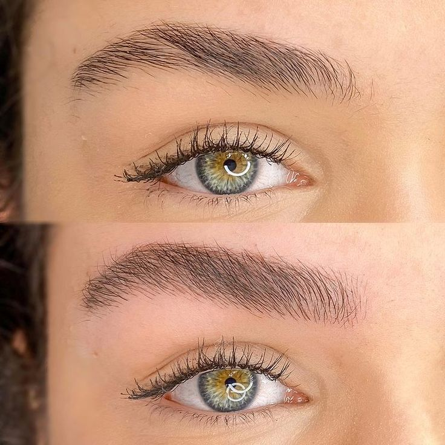
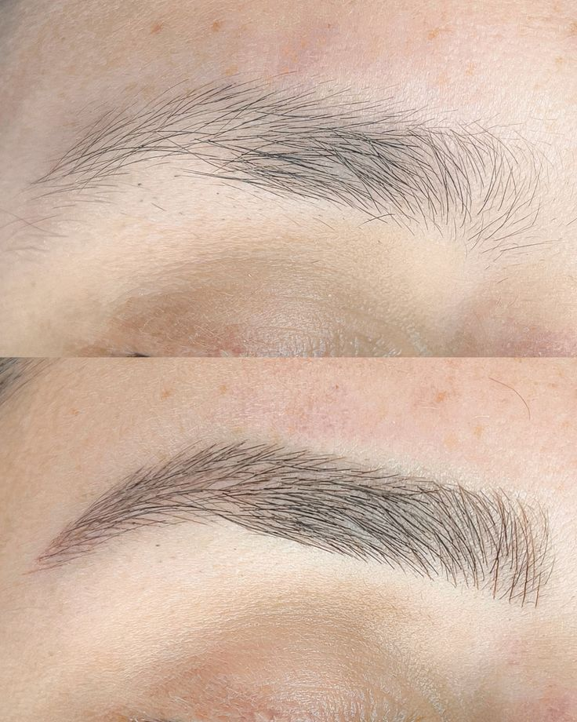
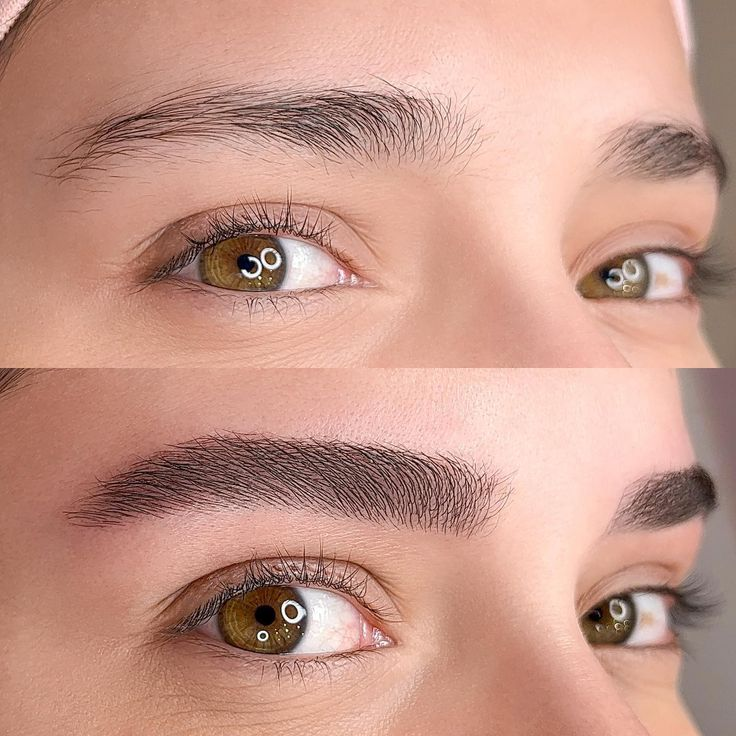
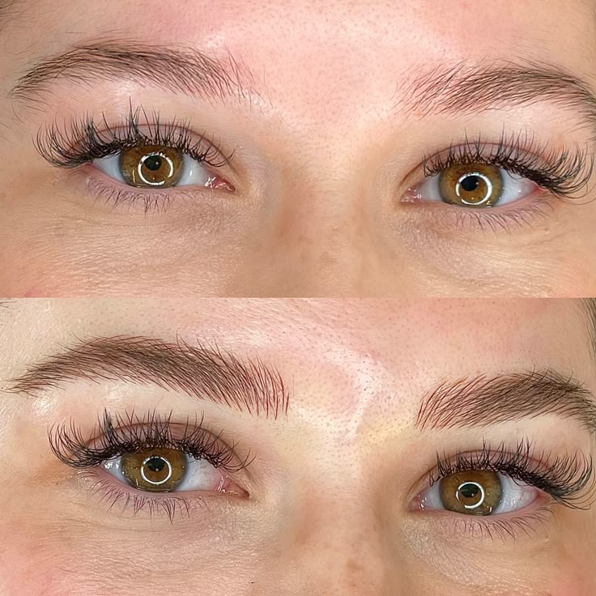
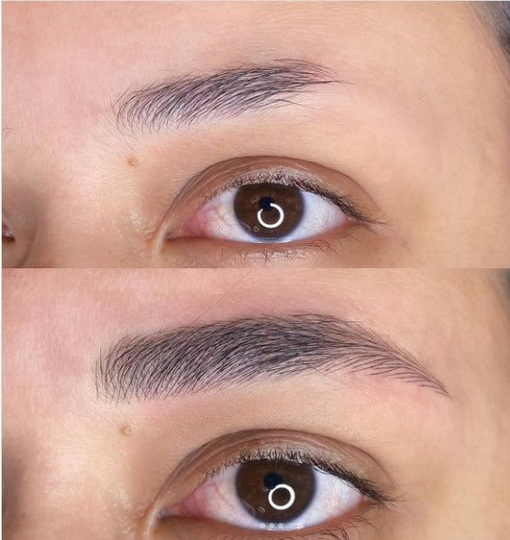

Ariane Duarte, especialista em micropigmentação de sobrancelhas e apaixonada pelo universo da estética.
Encontrei na micro de sobrancelha uma forma de cuidar, transformar e realçar a beleza natural de cada um, fio a fio, com leveza e delicadeza.
Minha missão é entregar um olhar mais confiante, harmonioso e único, sempre com muito carinho e dedicação. Nossos procedimentos são personalizados, respeitando o que você tem de mais lindo, sua essência e características únicas.
Sobrancelha Fio a Fio
No Bella Lumea somos especialistas em Nanopigmentação fio a fio, também conhecida como Micropigmentação fio a fio, Nanoblading ou Microblading.
Essa é uma técnica avançada, perfeita para quem têm sobrancelhas ralas e com falhas, e deseja sobrancelhas com aspecto natural, delicado e realista.





